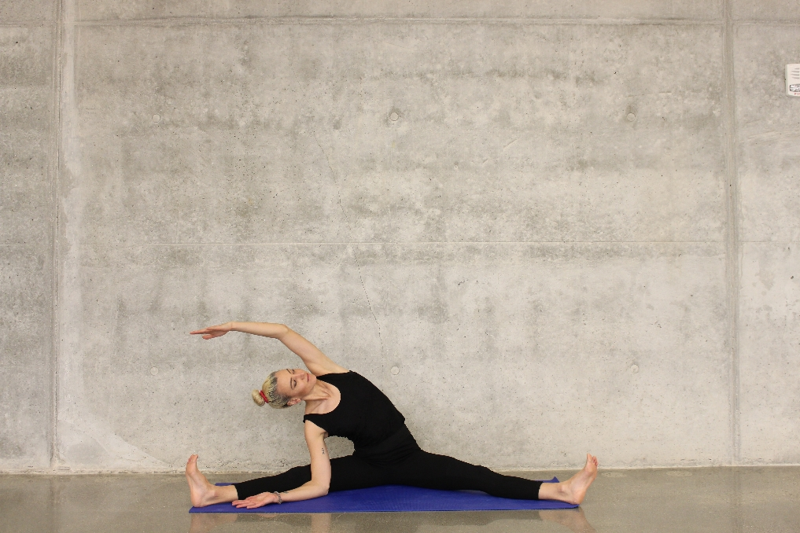

As this pandemic has taken a huge toll on our overall health; exercise & physical therapy has proven to be beneficial not only in aiding in recovery, but also in strengthening the lungs & body to prevent the detrimental effects of the virus.
If you're not yet infected with COVID-19:
Check if you're lungs are ready to fight the virus-
The following techniques & exercises will help you in keeping your lungs healthy-
If you currently have COVID-19 / if you recently had COVID-19 in the past:
As you recover from COVID-19, certain breathing techniques, general mobility and strengthening exercises will help to improve your day-to-day function. We recommend that you complete these exercises daily.
If your symptoms do not get better within six weeks, please speak to your GP about this and, if appropriate, please ask them to refer you to outpatient physiotherapy for further rehabilitation.
Below are the common problems experienced by people:
- Fatigue: Patients recovering from COVID-19 often experience a feeling of tiredness and exhaustion both physically and mentally caused by even a little exertion. This will improve in time. During your illness you will probably have lost some weight and muscle strength, and your joints may be stiff. Everyone recovers at a different rate, but you should not be concerned if it takes weeks or even months to get fully back to normal. The only way to get stronger is to walk and exercise “little and often”. It is important to pace your activities so you don’t do everything in one go. Decide on the number of activities you need to do that day or even across the week, then make a plan to spread out the activities so you have adequate rest periods. Start with small goals and gradually increase the amount you can do as you feel able to do so. As your strength returns you may want to take more vigorous exercise such as swimming, fast walking or cycling. If you want more specific advice before returning to other sports and activities, please speak to a Physiotherapist for guidance or your local doctor.
- Sleep: While your sick, your usual sleep routine may have been disrupted. You may find that you become tired very easily and that you need to take naps in the day and go to bed early, you should follow your body’s needs. Sleeping too much during the day can mean that you are not tired at night. You should find that as your activity levels increase, your sleep pattern returns to normal. The most important thing to remember is not to become worried about lack of sleep as this can make the problem worse. Try some relaxation techniques like mindfulness, meditation or even relaxing activities like listening to gentle music or reading a book before bed. It is best to avoid blue light from TV, phone and computer screens before bed as this can keep the brain alert. Problems with sleeping are common and do get better with time. If these become particularly bothersome, please speak to your doctor.
- Appearance: You may have noticed changes in your appearance such as hair loss or a change in the condition of your skin. If you have lost weight and muscle mass this can also affect your appearance. As your condition improves with diet, exercise, sleep and self-care, these problems should get better. If you have any scars or wounds from treatments you may have received, these will fade with time and become less obvious. If these scars continue to bother you, please speak to your doctor.
- Returning to Work: It may take some time before you are well enough to return to work. Your doctor will continue to care for you once you are at home, and will be able to advise you when you may be ready to return.
Refer to this booklet with a set of exercises to help regain overall strength if you currently have / recently had COVID-19: